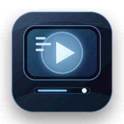
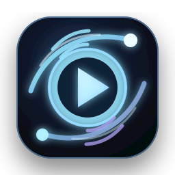
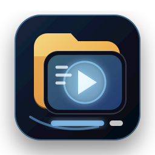

方案一：玻璃播放键
最贴近播放器本体，深色玻璃面板 + 蓝色辉光播放键。识别度强，适合作为默认应用图标。
64
48
32
16
docs/assets/icons/iptv-icon-01-glass-play.ico
每个方案都提供 SVG 源文件和 ICO 安装图标文件。请重点看 48px、32px、16px 小尺寸是否还清晰，因为 Windows 桌面和开始菜单经常会显示小图标。

最贴近播放器本体，深色玻璃面板 + 蓝色辉光播放键。识别度强，适合作为默认应用图标。
docs/assets/icons/iptv-icon-01-glass-play.ico

科技感最强，突出 IPTV 信号、网络、解析和播放链路。适合想要更酷、更未来感的方向。
docs/assets/icons/iptv-icon-02-signal-orbit.ico

保留“资源库/频道目录”的语义，但比当前桌面图标更现代。适合强调频道资源和本地媒体管理。
docs/assets/icons/iptv-icon-03-media-library.ico